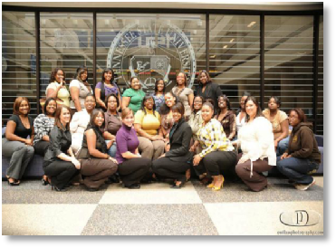
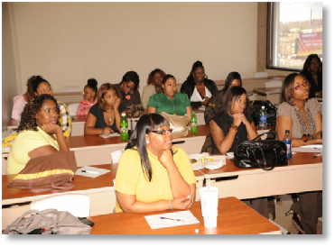
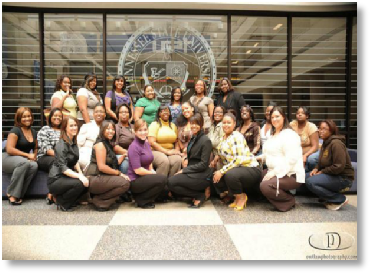
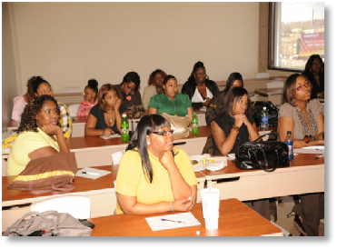

Contact the OVR
Iota Sweethearts - Ohio Valley Style
 
Iota Phi Theta Sweethearts are a recognized, respected and honored tradition of the Fraternity and have a long history of affiliation with Iota. This history harkens back to the days of our Founding and the circumstances of the day.
In the early 1960's at Morgan State University, Iota Phi Theta was blessed to have an invaluable ally in the person of Ms. Audrey Brooks. Ms. Brooks was a member of the Morgan State University staff and in this capacity, she played a crucial "behind the scenes" role for the Fraternity. In many instances, her actions and influence prevented the fledgling organization from being victimized by those who would have seen Iota fail.
The spirit and dedication of Ms. Brooks lives today through the Iota Phi Theta Sweetheart Organization and with good reason. As Iota Phi Theta navigated the rocky waters of our early years, the Brotherhood could always count on the support of our Sweetheart organization. Be it serving as hostesses for a national meeting or as a support team at a stepshow, our Hearts have always been there ... on the front lines ... providing vocal and moral support for the Brothers of Iota. Today, Iota Sweethearts (many of whom are wives of Iota Men) continue to support the organization in a major way.
Like many things about Iota Phi Theta, our Sweetheart organization represents a departure from the norm as practiced by other groups. Most notably, Iota Phi Theta Sweethearts do not "pledge." They are selected through a specific set of criteria as defined in our Official Sweetheart Directive.
Additionally, the Iota Sweetheart organization is not to be seen or construed as a substitute for a Sorority. In fact, thousands of Iota Sweethearts have gone on to join NPHC sororities. Iota Phi Theta is an avid supporter of these sororities and their activities. In keeping with this support and respect, we frown upon any activities undertaken by our Sweetheart Organization that might be seen as competitive to, or disrespectful of, these organizations